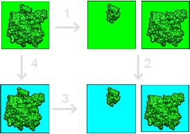

Binding energies with APBS¶
In general, implicit solvent models are used to calculation the contribution of solvation to binding free energies. Additional binding free energy contributions (molecular mechanics energies, entropic changes, etc.) must be calculated separately and are not discussed in this tutorial.
Free energy cycle¶
Our framework for calculating solvation contributions to binding free energies is shown in the figure below:
This binding free energy cycle illustrates binding in terms of transfer free energies from a homogeneous dielectric environment (where interactions are described by Coulomb’s law) to an inhomogeneous dielectric environment with differing internal (green) and external (cyan) dielectric constants. The binding (dissociation) free energy is depicted in Step 3. The binding free energy is given by
The following sections provide more detail on calculating individual terms of this equation.
Binding energy calculations¶
The most general method for calculating binding free energies divides the binding process up into solvation \(\Delta\Delta_s G\) and Coulombic \(\Delta\Delta_c G\) components:
As mentioned above, this framework neglects the numerous other mechanical and entropic components actually involved in the binding process.
Solvation contribution to binding¶
If we’re just interested in calculating the solvation contributions to binding (steps 4 and 2 in the binding free energy cycle), then we simply need to follow the instructions from the Solvation energies with APBS section for the complex and isolated components. The solvation energy contribution to the binding is then given by
Coulombic contribution to binding¶
To complete the binding free energy cycle, we need to add intermolecular Coulombic contributions to the solvation energy change upon binding to get the total electrostatic/solvent contribution to the binding free energy. In particular, we’re interested in the change in Coulombic electrostatic energy upon binding, as given by
Each of the quantities in this equation is the sum of pairwise Coulombic interactions between all atoms in the molecule (or complex) for a particular uniform dielectric.
In order to combine these Coulombic binding energies with the solvation energies described above, we need to make sure consistent dielectric constants are used.
In particular, Coulombic interactions should be calculated using the same uniform dielectric constant as the reference state of the solvation energy above.
For example, if solvation energies are calculated for transferring a protein from a homogeneous medium with uniform dielectric of to an inhomogeneous medium with internal dielectric \(\epsilon_u\) and external dielectric \(\epsilon_v\), then Coulombic energies should be calculated using a dielectric of \(\epsilon_u\).
The APBS accessory program tools/manip/coulomb was created to help with the calculation of these analytic individual per-molecule Coulombic energies.
Given a PQR file as input, the tools/manip/coulomb program calculates Coulombic energies for a vacuum dielectric (e.g., a uniform dielectric of 1).
If the reference dielectric is \(\epsilon_u\), then all energies returned by tools/manip/coulomb need to be divided by \(\epsilon_u\).
Other examples¶
Several binding energy examples are distributed in the examples directory with APBS.
Todo
Link binding energy examples directly from the source tree.